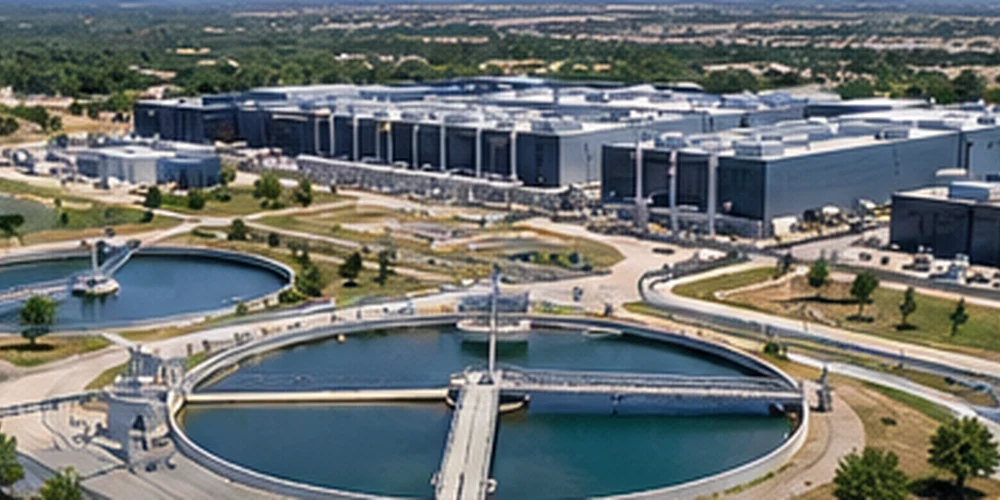
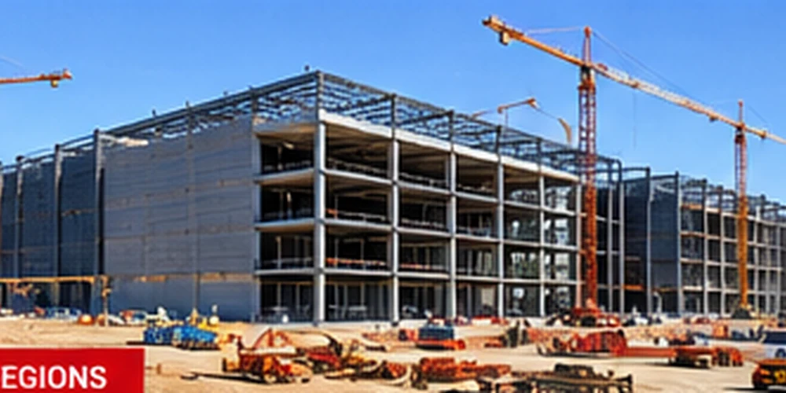
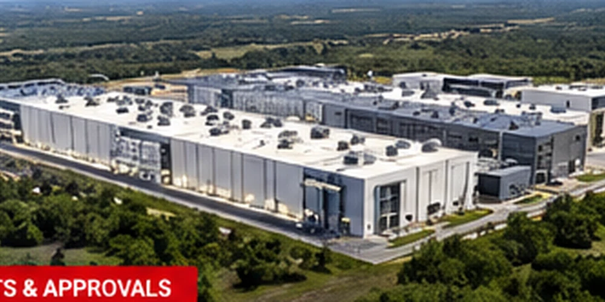

TEXAS DATA CENTER NEWS
Why Texas Is Attracting Data Centers
Texas combines large metropolitan markets, connectivity and land availability, but power access is a critical constraint.
READ ARTICLE →Tracking the projects, power needs, water questions and permitting decisions shaping Texas data center growth.
Texas combines large metropolitan markets, connectivity and land availability, but power access is a critical constraint.
READ ARTICLE →Large computing campuses can add substantial electric demand, making ERCOT forecasts and connection timelines essential to watch.
READ ARTICLE →
Cooling design, climate and local water supplies shape the environmental debate over new computing facilities.
READ ARTICLE →
DFW’s established digital infrastructure makes it a natural focus for project announcements and local scrutiny.
READ ARTICLE →
Central Texas projects bring discussions about energy, land use, cooling and neighborhood impacts.
READ ARTICLE →A practical guide to understanding zoning, environmental permits and utility approvals before calling a project greenlit.
READ ARTICLE →Texas Data Center Expansion Meets New Permit Scrutiny (October 25, 2026)
We distinguish verified approvals from proposed projects and publish explainers alongside developing coverage.
Texas Voters Raise Power and Water Concerns as Data Centers Expand
AI Data Center Boom Spurs New Interest in Microgrids and On-Site Power